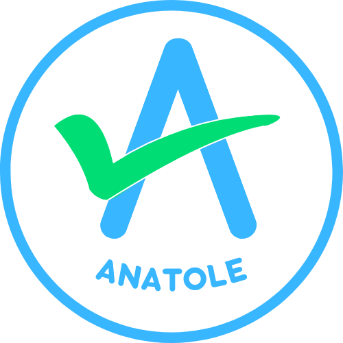

Anatole est une extension qui vous aide à repérer les sites officiels pour vos démarches administratives en ligne.
Elle est totalement gratuite, sans publicité et fonctionne localement dans votre navigateur, sans collecte de données personnelles.
La Carte Nationale d'Identité est gratuite en France. Un timbre fiscal de 25 euros est requis uniquement en cas de perte ou de vol.
Pour les personnes majeurs (18 ans et plus) : 86 euros
Pour les mineurs de 15 à 17 ans : 42 euros
Pour les mineurs de moins de 15 ans : 17 euros
Vous pouvez acheter un timbre fiscal dans un débit de tabac ou en ligne, directement sur le site des impôts, en cliquant sur le bouton ci-dessous :
Une copie d'acte d'état civil est toujours gratuite.
La carte grise (certificat d'immatriculation) est payante et son coût dépend de plusieurs facteurs, notamment la puissance fiscale du véhicule, son âge, et la région où vous habitez.
Vous pouvez estimer le coût de votre carte grise sur le site officiel service-public.gouv.fr. En revanche, le changement d'adresse est gratuit.
De nombreux sites non officiels vous proposent de réaliser vos démarches en votre nom, moyennant des frais élevés et injustifiés. Anatole vous aide à distinguer les sites officiels, simplement et rapidement, et vous sécurise dans vos démarches en ligne.
Merci d’avoir installé Anatole. Pour toute suggestion ou retour, vous pouvez me contacter via la page dédiée ou par mail à contact@samsamdev.fr.